Computer Aided Design
Week 2
Computer Aided Design (CAD)
Tasks
Group assignment:
Make lasercutter test part(s), varying cutting settings and slot dimensions
Individual assignment:
Cut something on the vinylcutter
Design, make, and document a parametric press-fit construction kit, accounting for the lasercutter kerf, which can be assembled in multiple ways
Group Assignment
We started this assignment by searching some works done in pressfit, and we found some usefull links,did some tests and found a few pressfit pictures in the web that we started do draw in illustrator. We used 3mm plywood for this tests. We couldn't find good cardboard.
Drawing the group assignment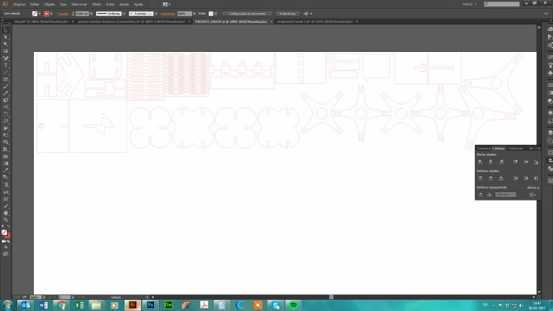
Lasercutting the pieces on our GCC Sprit GLS
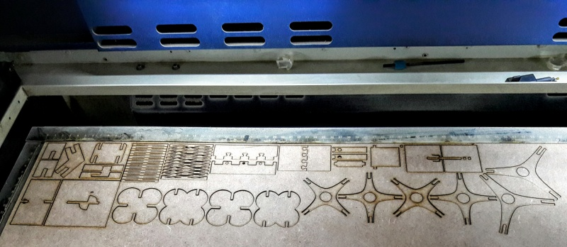
Draw of a nice pressfit
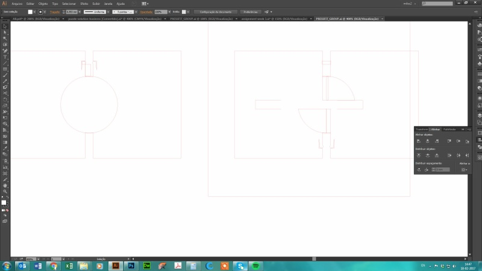
Assembling the Pieces
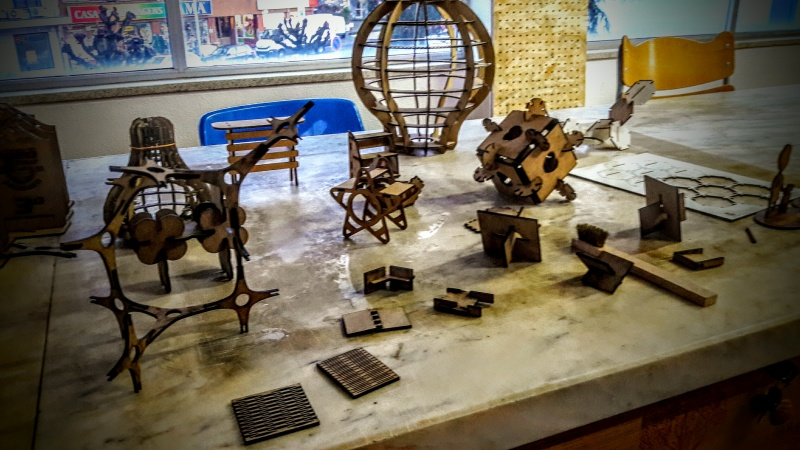
In the end, Each of us focused on one specific joint for better document. I did mine:
Picture of the first Joint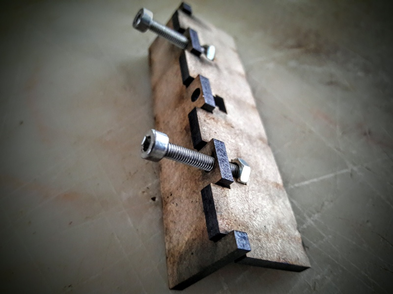
I had to measure the screw nuts and the screw to draw the pressfit. This kind of joint is very usefull for joints that require more resistance, because the screws give more strenght to the joint. The first result was not as i expected, because of the lenghts of the screws. I had to create longer holes for the screws as you can see in the picture below.
Final photo of the pressfit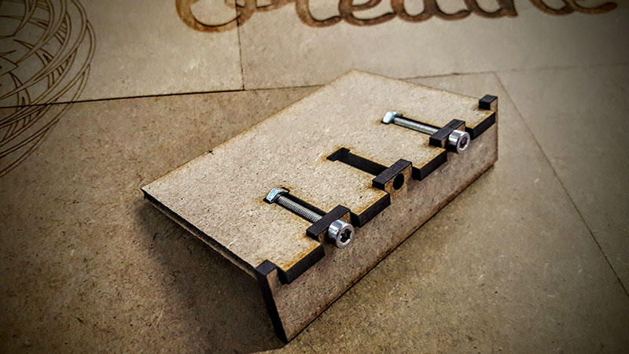
Scheme of the pressfit
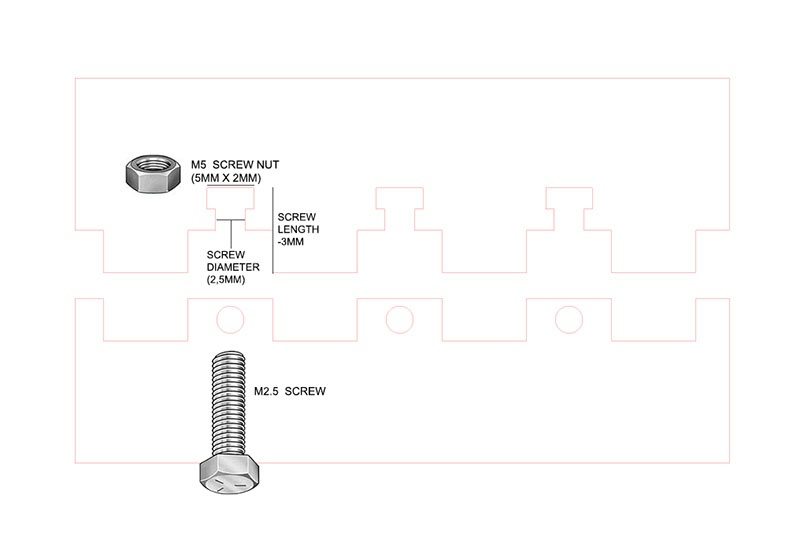
Some of the pressfits were harder to draw than others, because some of them we were already familiar with. We tested the kerf and optimized the lasercutting with diferent parameters.
Final Parameters : Speed:2.5 Power:95
KERF for 3mm plywood: 0.02mm
FILE DOWNLOAD
References - Pressfit Construction Kit,
Puzzle in CNC,
Saulnier Fabacademy Page,
Karsten Nebe Fabacademy Page,
Vinyl Cutting
The vinyl cutter is not so often used here in the Fablab. But it has great potential and is very precise. I used Roland GX-24 and illustrator to draw. Hopefully, i'm going to be a father for the first time this year, and me and my wife are decorating the room for the kid, Benjamin. So i decided to make a ruler to put in the wall, to keep up with my child's growth. I started to look for good ideas and i started from scratch. I wanted a baby lion silhouette, with a nice and visible ruler and phrase. After illustrator and photoshop, here is the final 2D Render:
Simulating the vinyl cutter work
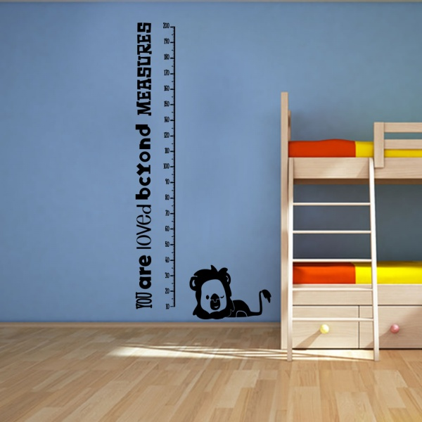
Drawing a real scale ruler
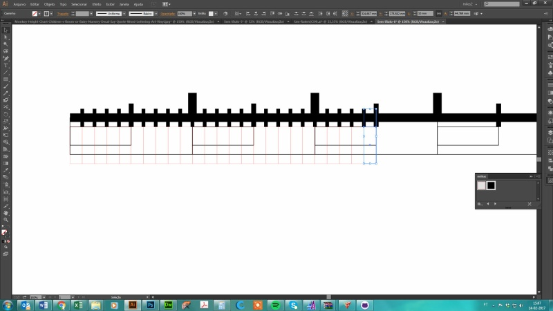
I had now the vector file. But the wall is not ready yet. So i decided to cut only the baby lion. I did only in black vinyl, so i had to make sure the whites and the blacks didn't overlap. I saved the file in Japanese AI format, so i can use it the vinylcutter software, and then opened Cutstudio Software to start cutting.
Changing the zise of the baby Lion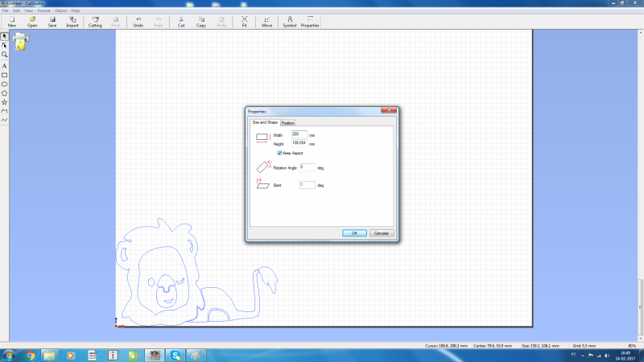
Getting the cutting parameters through the machine
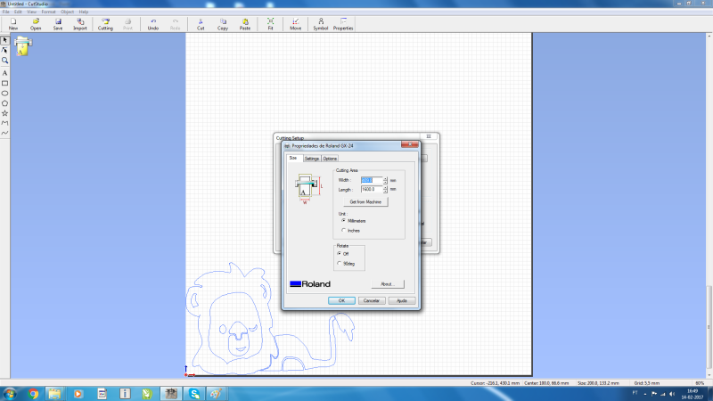
Starting using the transfer process with vinyl transfer
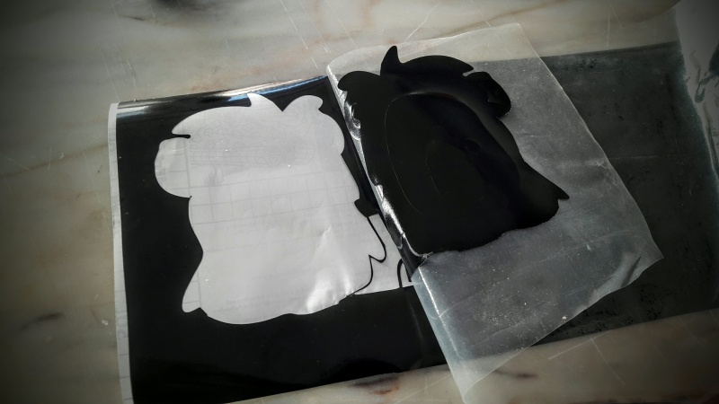
Final Result of the transfer process
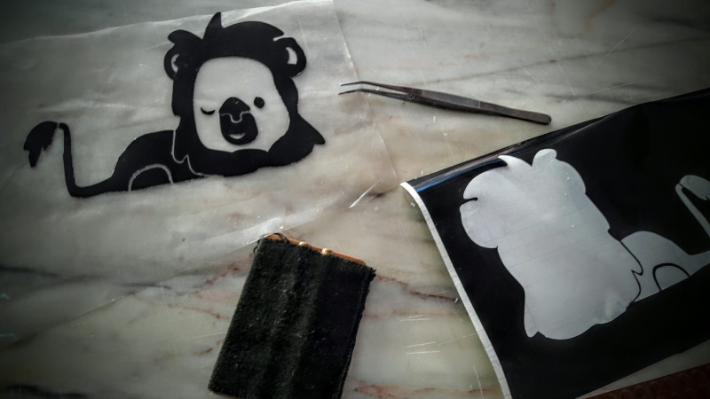
Stamping the lion in a wood board with some defects
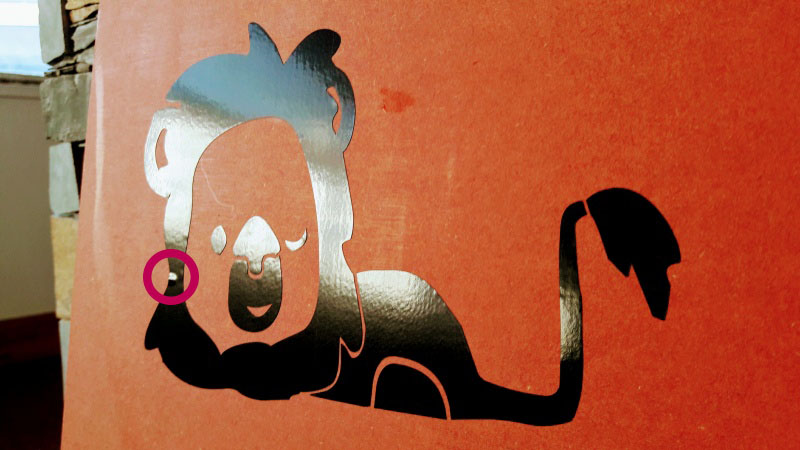
Final result after after using a vinyl Scraper Squeegee
References - Pinterest good Ideas for baby's room ruler
Pressfit
I'm a biker, and this weekend there is going to be a long course competition on MTB. They asked for my help to create the trophys for the challenge. and i thought a pressfit bike would be nice. I started to draw the bike pieces from a file i found and creating my own bike. The idea is to give the trophy to the winners with a kit for assembling all the parts.
Drawing the Bike Parts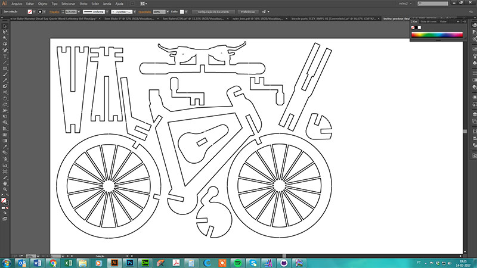
I had to reduce the joint 0.2mm to make it press better. For this 3mm plywood, the fiting joints are 2,8mm wide. I then had to stick all the parts to a wood board to fit in the trophy. So i made a 0.25mm gap between the segments i needed. I did this easilly by drawing a 0.25mm height rectangle and used the exclude command in the pathfinder tool inside Illustrator
Small gaps to stick the bike parts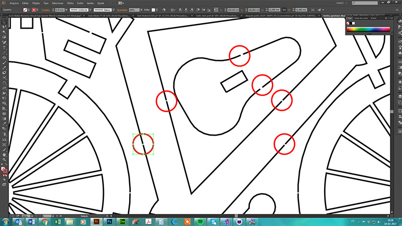
Final Result of the Trophy
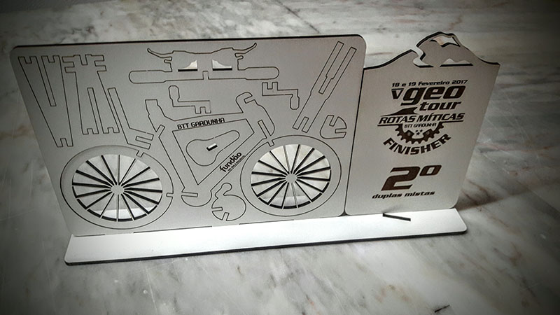
I'll share later the assembled bike photos
References - Davinci Bike Google Search ,